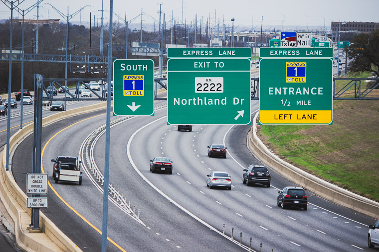
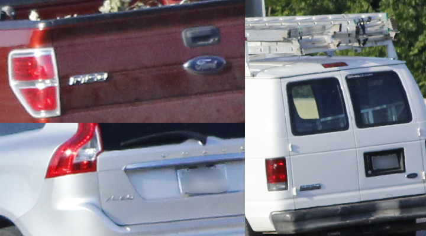

In this post, I explain how I simulated vehicle records for the Mopac Express Lane in Austin, Texas.

Motivation
I am currently working towards the release of my second R package, sift. This package is essentially an amalgam of various ideas I’ve had over the past few years. Since grouping these ideas into one package was very important to me, I needed a common theme to tie all of the functions together.
The dataset created in this post, express, serves as a realistic case study where one can effectively utilize the full capability of sift.
library(tidyverse)
library(lubridate)
library(jsonlite)
options(readr.default_locale = locale(tz = "US/Central"))
theme_set(theme_minimal())
Step 1: Reconnaissance
How frequent are various vehicle types on Mopac? Lots of F-150s? Toyota Camrys?
By no means does the intended application of the dataset require 100% accuracy. However, achieving something somewhat realistic was still important to me. After coming up dry on Google, I decided to walk out my front door and get the answer from the primary source.
Discreetly nestled in a grove overlooking Mopac, I aimed my camera at rush hour traffic and let the shutter snap for 2.5 minutes. After repeating this over the course of 1 week, I had collected over 600 frames.

These photos present a clear opportunity to apply an Image Recognition ML algorithm - but I’m saving that for a future post. 😉
The resulting dataset is named rush_hour.
rush_hour <- read_csv("https://raw.githubusercontent.com/sccmckenzie/mopac/master/inst/extdata/rush_hour.csv")
# also available in mopac::rush_hour
rush_hour %>%
sample_n(5) %>%
knitr::kable()
| Fri |
2020-05-22 18:46:33 |
FALSE |
Blue |
Hatch |
Toyota |
Prius |
| Sun |
2020-05-17 17:27:51 |
FALSE |
Blue |
Hatch |
Nissan |
Versa |
| Tue |
2020-05-19 18:42:14 |
TRUE |
Grey |
Truck |
Dodge |
Ram |
| Sat |
2020-05-23 15:07:10 |
FALSE |
Black |
SUV |
Mazda |
NA |
| Wed |
2020-05-20 18:29:01 |
FALSE |
Silver |
Hatch |
Toyota |
Prius |
If you live in Texas, the below results shouldn’t come as a surprise.
rush_hour %>%
unite(make_model, make, model, sep = " ") %>%
drop_na(make_model) %>%
count(make_model) %>%
slice_max(order_by = n, n = 10) %>%
ggplot(aes(n, fct_reorder(make_model, n))) +
geom_col()

Although rush_hour satisfies the need for realistic vehicle make/model frequencies, it cannot serve as a basis for inferring express lane traffic density since observations were obtained from Mopac mainlanes.
To avoid further speculation, I made another trip to acquire express lane timestamps (collected during afternoon rush hour).
express_counts <- read_csv("https://raw.githubusercontent.com/sccmckenzie/mopac/master/inst/extdata/express_counts.csv")
glimpse(express_counts)
## Rows: 250
## Columns: 1
## $ time <dttm> 2021-03-04 17:57:16, 2021-03-04 17:57:18, 2021-03-04 17:57:22...
Step 2: Defining Scope
Mopac contains an express lane stretching 11 miles between downtown Austin to Parmer Lane. There is an intermediate access point near RM 2222, boxed in pink below.
- Our mock dataset,
express, will feature vehicle descriptions + timestamps as if they are captured at the RM 2222 checkpoint,
- We’ll obtain peak traffic distribution by bootstrapping
express_counts, then adjusting based on City of Austin data.
- Vehicle make/model/color frequencies will be inferred from
rush_hour.[^1]
Step 3: Peak Traffic Distribution
First, we extract timestamp spacing from express_counts.
set.seed(10)
t_delta <- express_counts %>%
mutate(t_delta = time_length(time - lag(time))) %>%
drop_na(t_delta) %>%
mutate(t_delta = t_delta + 2 * rbeta(n(), 2, 3)) %>%
# ^ we add some jitter into timestamps
# (observations were recorded with 1 sec resolution)
pull(t_delta)
t_delta %>%
qplot(binwidth = 0.25) # histogram

To simulate timestamps for express, we perform bootstrap sampling from the above distribution.
# set timeframe (5am - 8pm)
t1 <- 5
t2 <- 20
total_seconds <- (t2 - t1) * 3600
set.seed(20)
express <- tibble(direction = c("North", "South")) %>%
rowwise(direction) %>%
summarize(vehicle_spacing = sample(t_delta, size = total_seconds, replace = TRUE)) %>%
# ^ generate temporal vehicle spacing
transmute(time = make_datetime(2020, 5, 20, t1, tz = "US/Central") + cumsum(vehicle_spacing)) %>%
# ^ add temporal vehicle spacing together
filter(time < make_datetime(2020, 5, 20, t2, tz = "US/Central"))
# ^ cut off timestamps later than 8pm
express %>%
group_by(direction,
t15 = floor_date(time, unit = "15 minutes")) %>%
summarize(volume = n()) %>%
ggplot(aes(t15, volume)) +
geom_line(aes(color = direction))

While we have achieved some randomness, the consistent baseline around 150 is unrealistic. For example, around 6:00am, nobody is actually using the express lane.
Step 4: Exploring City of Austin API
Although Texas state highway traffic count data is elusive (at least at the granularity needed for this application), the City of Austin (COA) provides ample resources on frontage road intersections.
Below we access Mopac & Steck Ave traffic volume measurements from COA open data portal. This intersection is located ~ 3mi north of Mopac & RM 2222, which unfortunately doesn’t have records in the Camera Traffic Counts table.
steck <- jsonlite::fromJSON('https://data.austintexas.gov/resource/sh59-i6y9.json?atd_device_id=6409&year=2020&month=5&day=20&heavy_vehicle=false') %>%
as_tibble() %>%
janitor::clean_names() %>%
transmute(read_date = as_datetime(read_date, tz = "US/Central"),
direction,
movement,
volume = as.integer(volume))
Each row contains measurements summarized over 15 minutes intervals.
steck %>%
sample_n(5) %>%
knitr::kable()
| 2020-05-20 00:45:00 |
EASTBOUND |
RIGHT TURN |
2 |
| 2020-05-20 07:15:00 |
NORTHBOUND |
THRU |
9 |
| 2020-05-20 10:30:00 |
NORTHBOUND |
LEFT TURN |
15 |
| 2020-05-20 01:00:00 |
SOUTHBOUND |
LEFT TURN |
1 |
| 2020-05-20 22:00:00 |
SOUTHBOUND |
THRU |
12 |
Here, we restrict our focus to north & south, as these are the only directions that could correspond to cars entering Mopac.
steck %>%
filter(direction %in% c("NORTHBOUND", "SOUTHBOUND")) %>%
group_by(direction, read_date) %>%
summarize(volume = sum(volume)) %>%
ggplot(aes(read_date, volume)) +
geom_line(aes(color = direction))

The above distribution is much more believable: starting around 6am, traffic increases, levels out, gets worse around lunch, and finally recedes after 6pm.
The large discrepancy between north & south may be due to the fact that it’s extremely difficult to get on northbound Mopac from Steck Ave. In other words, people may be opting for an alternate access point if they are travelling north.
For the sake of simplicity, we will project the SOUTHBOUND distribution onto our express dataset (both directions).
steck_normalized <- steck %>%
filter(direction == "SOUTHBOUND") %>%
with_groups(read_date,
summarize,
volume = sum(volume)) %>%
transmute(id = row_number(),
read_date,
volume = volume/max(volume))
set.seed(25)
# join Steck volume with express timestamps
express <- express %>%
mutate(id = findInterval(time, steck_normalized$read_date)) %>%
left_join(steck_normalized, by = "id") %>%
rowwise() %>%
mutate(keep = sample(c(FALSE, TRUE), prob = c(1 - volume, volume), size = 1)) %>%
# ^ treat volume as probability of keeping row in express
ungroup() %>%
filter(keep) %>%
select(direction, time) %>%
arrange_all()
express %>%
group_by(direction,
t15 = floor_date(time, unit = "15 minutes")) %>%
summarize(volume = n()) %>%
ggplot(aes(t15, volume)) +
geom_line(aes(color = direction))

Voila! Admittedly, this is a somewhat hackish method to achieve the desired result. For the intended purpose of this dataset, we don’t need to worry about using more sophisticated statistical techniques.
Step 5: Trip Modeling
Though we could arbitrarily assign a unique vehicle for each row in express, this wouldn’t be realistic. Consider the below scenarios:
- Vehicle uses Express Lane once in one direction.
- Vehicle uses Express Lane once in both directions (e.g. commuting to & from work).
- Vehicle uses Express Lane thrice in any combination of directions (e.g. rideshare).
Before we jump in, let’s create a helper to extract hour of day as a decimal. This will improve readability of our downstream code.
hourday <- function(t) {
time_length(t - make_datetime(2020, 5, 20, tz = "US/Central"), unit = "hours")
}
# example
hourday(as_datetime("2020-05-20 12:30:00", tz = "US/Central"))
## [1] 12.5
For Scenario #1, each vehicle corresponds to one timestamp. We’ll obtain 5000 observations using a single unbiased sample.
set.seed(254)
scenario_1 <- express %>%
sample_n(size = 5000) %>%
mutate(v_id = row_number())
scenario_1 %>%
ggplot(aes(time)) +
geom_histogram(aes(fill = direction), binwidth = 900)

Note the above distribution contains roughly the same amount of north & south observations. For Scenario 2, we’ll need to enforce actual equality between directions so that each north timestamps has a corresponding south timestamp.
Each vehicle will contain 2 timestamps:
- Timestamp A (driving to work)
- Timestamp B (driving home)
We sample A Timestamps weighted by \(\mathcal{N}(7\textrm{am}, 4\textrm{hr})\).
set.seed(400)
scenario_2A <- express %>%
anti_join(scenario_1) %>%
# ^ exclude observations already sampled into scenario_1
group_by(direction) %>%
# ^ need equal amounts of north & south samples
sample_n(size = 1000, weight = dnorm(hourday(time), mean = 7, sd = 2)) %>%
mutate(id = row_number()) %>%
ungroup()
We’ll assume most trips take ~10 hours (9 hour workday + 30 minute commute each way). This implies a B timestamp distribution of \(\mathcal{N}(5\textrm{pm}, 4\textrm{hr})\).
scenario_2B <- express %>%
anti_join(scenario_1) %>%
anti_join(scenario_2A) %>%
group_by(direction) %>%
sample_n(size = 1000, weight = dnorm(hourday(time), mean = 17, sd = 2)) %>%
mutate(id = row_number()) %>%
ungroup()
bind_rows(
mutate(scenario_2A, grp = "A"),
mutate(scenario_2B, grp = "B")
) %>%
ggplot(aes(time)) +
geom_histogram(aes(fill = grp))

Notice there is some overlap between the A & B distribution. This is intentional, as there will inevitably be some drivers that start their commute in the afternoon.
Currently, there are no unique vehicles tying observations together between scenario_2A & scenario_2B. At first, I tried using for-loop structure - but this was excessively slow. After some brainstorming, I came up with the below procedure, which avoids for-loops entirely!
- Randomly create multiple sets of timestamp pairs (only pairing opposite directions together).
- Eliminate sets that contain impossible pairs (e.g. negative trip length).
- Examine trip length distributions and select set that appears normal.
# I arbitrarily set the number of repetitions to 100,
# which is ultimately more than enough to achieve desired result
scenario_2_sim <- bind_rows(
map_dfr(1:100, ~ {
tibble(i = ..1,
direction = "NS",
North = filter(scenario_2A, direction == "North")$time %>% sample(),
South = filter(scenario_2B, direction == "South")$time %>% sample())
# ^ for a given set, each timestamp only appears once
}),
map_dfr(1:100, ~ {
tibble(i = ..1,
direction = "SN",
South = filter(scenario_2A, direction == "South")$time %>% sample(),
North = filter(scenario_2B, direction == "North")$time %>% sample())
# ^ same thing as above, except now we flip the directions
})
) %>%
mutate(l = if_else(direction == "NS",
time_length(South - North, unit = "hours"),
time_length(North - South, unit = "hours"))) %>%
with_groups(c(direction, i), filter, !any(l < 0.5))
# ^ a complete circuit around the express lane would take at least 1/2 an hour
scenario_2_sim %>%
ggplot(aes(l)) +
geom_density(aes(color = factor(i))) +
facet_wrap(~ direction, ncol = 1)

Most of these distributions appear normal. We’ll pick the one with the highest Shapiro-Wilk normality test statistic.
library(broom)
scenario_2 <- scenario_2_sim %>%
group_by(direction, i) %>%
summarize(vec = list(l)) %>%
rowwise() %>%
mutate(shapiro.test(vec) %>% tidy()) %>%
filter(p.value < 0.1) %>%
group_by(direction) %>%
slice_max(order_by = statistic) %>%
semi_join(scenario_2_sim, .) %>%
transmute(North, South, v_id = max(scenario_1$v_id) + row_number()) %>%
pivot_longer(North:South, names_to = "direction", values_to = "time")
For Scenario 3, we won’t impose any distributional or directional constraints on timestamp selection.
scenario_3 <- express %>%
anti_join(scenario_1) %>%
anti_join(scenario_2) %>%
sample_n(size = n()) %>%
mutate(v_id = (row_number() - 1) %% 3 == 0,
v_id = cumsum(v_id) + max(scenario_2$v_id)) %>%
group_by(v_id) %>%
arrange(v_id, time) %>%
mutate(delta = time_length(time - lag(time), unit = "hours")) %>%
filter(!any(delta < 1, na.rm = TRUE)) %>%
ungroup() %>%
slice_head(n = 300) %>%
select(direction, time, v_id)